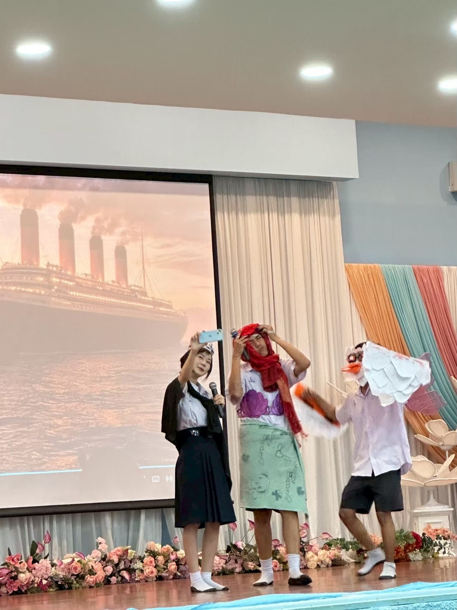
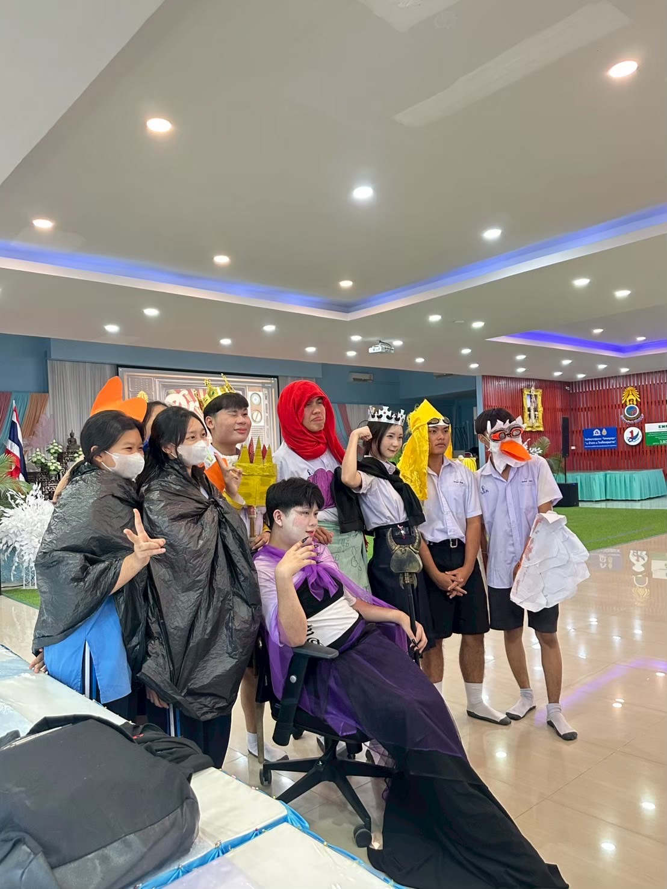
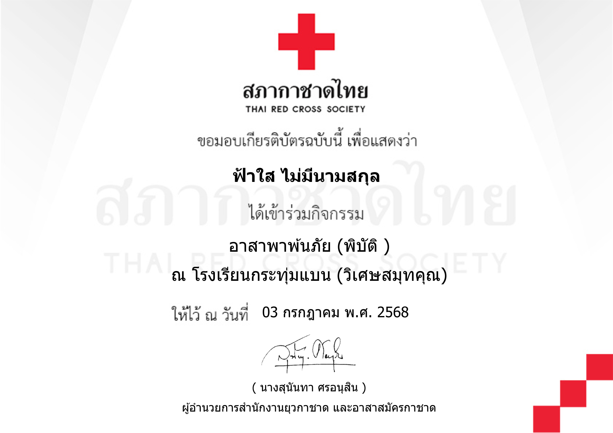
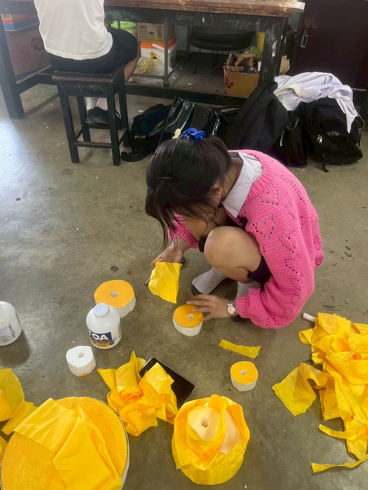
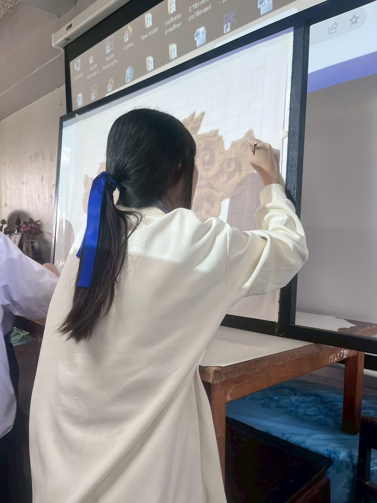

📂 คลังผลงานและความสำเร็จ
รวบรวมความตั้งใจและการเรียนรู้ตลอดช่วงมัธยมปลาย ณ โรงเรียนกระทุ่มแบน "วิเศษสมุทรคุณ"
🌐 ทักษะทางภาษาและการเรียนรู้ (Language & Literacy)


🎭 English Drama: การแสดงละครเวทีภาษาอังกฤษเรื่อง "Ariel" (Custom Version)
บทบาทและความประทับใจ: ได้มีโอกาสร่วมแสดงละครเวทีภาษาอังกฤษที่มีการปรับแต่งเนื้อเรื่องขึ้นมาใหม่ ซึ่งกิจกรรมนี้เปิดโอกาสให้ได้ฝึกฝนทักษะการออกเสียง (Pronunciation) และการใช้น้ำเสียงสื่อสารอารมณ์
สิ่งที่ได้เรียนรู้: ช่วยทลายกำแพงความกลัวในการใช้ภาษา เพิ่มความมั่นใจในการสื่อสารในที่สาธารณะ (Public Speaking) และการทำงานเป็นทีมร่วมกับผู้อื่นค่ะ
English Speaking Creative Performance
📜 เกียรติบัตร: เยาวชนสุดยอดนักอ่าน (ได้รับรางวัล 2 ปีซ้อน)
ความประทับใจ: รางวัลนี้สะท้อนถึงนิสัยรักการอ่านและการค้นคว้าอย่างต่อเนื่องถึง 2 ปีซ้อน ซึ่งเป็นพื้นฐานสำคัญที่ช่วยเพิ่มพูนคลังคำศัพท์และพัฒนาทักษะการคิดวิเคราะห์ (Critical Thinking) สำหรับการศึกษาต่อสายภาษาค่ะ

📊 ผลคะแนนการวัดระดับภาษาอังกฤษ (CEFR Level B1)
รายละเอียด: ได้คะแนน 35 เต็ม 100 ในระดับ B1 (Intermediate) เป็นเครื่องพิสูจน์ถึงความพยายามในการพัฒนาตนเองและเป็นแรงผลักดันในการเรียนรู้ภาษาอังกฤษในระดับที่สูงขึ้นค่ะ

🔬 เกียรติบัตร: เข้าร่วมกิจกรรมค่ายสะเต้มศึกษา (STEM Camp)
สิ่งที่ได้เรียนรู้: ฝึกกระบวนการคิดที่เป็นเหตุเป็นผลและการแก้ปัญหาอย่างเป็นระบบ ซึ่งสามารถนำมาประยุกต์ใช้กับการวิเคราะห์โครงสร้างภาษาได้อย่างมีประสิทธิภาพ
👥 กิจกรรมเด่นและทักษะสังคม (Activities & Soft Skills)

🏥 เกียรติบัตร: อาสาสมัครสภากาชาดไทย (โครงการอาสาพ้นภัยพิบัติ)
สิ่งที่ได้เรียนรู้: ได้รับความรู้เกี่ยวกับการเตรียมพร้อมรับมือวิกฤตและการช่วยเหลือสังคม แสดงถึงความเป็นเยาวชนที่มีจิตสาธารณะและพร้อมอุทิศตนเพื่อส่วนรวมค่ะ

🚫 เกียรติบัตร: อบรมโครงการรู้เท่าทันวิวัฒนาการภัยของยาเสพติด
สิ่งที่ได้เรียนรู้: พัฒนาทักษะการตระหนักรู้และเฝ้าระวังภัยสังคม เพื่อสร้างภูมิคุ้มกันให้ตนเองและเป็นส่วนหนึ่งในการสร้างสังคมที่ปลอดภัย

🎮 รางวัลรองชนะเลิศอันดับ 1: การแข่งขัน E-Sports (RoV)
สิ่งที่ได้เรียนรู้: ฝึกทักษะการทำงานเป็นทีม (Teamwork) การสื่อสารอย่างมีประสิทธิภาพภายใต้ความกดดัน และการวางแผนกลยุทธ์ร่วมกับผู้อื่นค่ะ



🤝 กิจกรรมโรงเรียน: กิจกรรมประดิษฐ์กระทง และกิจกรรมกีฬาสี
ความประทับใจ: ได้มีส่วนร่วมในการสืบสานวัฒนธรรมผ่านการทำกระทง และสร้างความสามัคคีในกิจกรรมกีฬาสี ทำให้ได้ฝึกทักษะการประสานงานและความอดทนในการทำงานร่วมกับหมู่คณะค่ะ